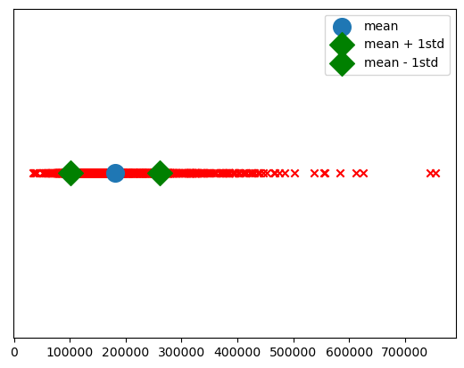

Exploratory Data Analysis¶
Load our data: Housing data set, with house prices¶
import pandas as pd
from sklearn.datasets import fetch_openml
housing = fetch_openml(name="house_prices", as_frame=True)
X = pd.DataFrame(housing.data, columns=housing.feature_names)
X.drop('Id',axis=1,inplace=True)
y = housing.target
X.head()
| MSSubClass | MSZoning | LotFrontage | LotArea | Street | Alley | LotShape | LandContour | Utilities | LotConfig | ... | ScreenPorch | PoolArea | PoolQC | Fence | MiscFeature | MiscVal | MoSold | YrSold | SaleType | SaleCondition |
|---|---|---|---|---|---|---|---|---|---|---|---|---|---|---|---|---|---|---|---|---|
| 0 | 60.0 | RL | 65.0 | 8450.0 | Pave | None | Reg | Lvl | AllPub | Inside | ... | 0.0 | 0.0 | None | None | None | 0.0 | 2.0 | 2008.0 | WD |
| 1 | 20.0 | RL | 80.0 | 9600.0 | Pave | None | Reg | Lvl | AllPub | FR2 | ... | 0.0 | 0.0 | None | None | None | 0.0 | 5.0 | 2007.0 | WD |
| 2 | 60.0 | RL | 68.0 | 11250.0 | Pave | None | IR1 | Lvl | AllPub | Inside | ... | 0.0 | 0.0 | None | None | None | 0.0 | 9.0 | 2008.0 | WD |
| 3 | 70.0 | RL | 60.0 | 9550.0 | Pave | None | IR1 | Lvl | AllPub | Corner | ... | 0.0 | 0.0 | None | None | None | 0.0 | 2.0 | 2006.0 | WD |
| 4 | 60.0 | RL | 84.0 | 14260.0 | Pave | None | IR1 | Lvl | AllPub | FR2 | ... | 0.0 | 0.0 | None | None | None | 0.0 | 12.0 | 2008.0 | WD |
Example 1: Dataframe evaluation¶
- Demonstrate size of the data set (rows, columns)
- Identify the numerical columns
- Identify the categorical columns
- Identify the number of unique categories in the feature
SaleCondition- Put these into dummy columns
(1460, 79)
| MSSubClass | LotFrontage | LotArea | OverallQual | OverallCond | YearBuilt | YearRemodAdd | MasVnrArea | BsmtFinSF1 | BsmtFinSF2 | ... | GarageArea | WoodDeckSF | OpenPorchSF | EnclosedPorch | 3SsnPorch | ScreenPorch | PoolArea | MiscVal | MoSold | YrSold |
|---|---|---|---|---|---|---|---|---|---|---|---|---|---|---|---|---|---|---|---|---|
| 0 | 60.0 | 65.0 | 8450.0 | 7.0 | 5.0 | 2003.0 | 2003.0 | 196.0 | 706.0 | 0.0 | ... | 548.0 | 0.0 | 61.0 | 0.0 | 0.0 | 0.0 | 0.0 | 0.0 | 2.0 |
| 1 | 20.0 | 80.0 | 9600.0 | 6.0 | 8.0 | 1976.0 | 1976.0 | 0.0 | 978.0 | 0.0 | ... | 460.0 | 298.0 | 0.0 | 0.0 | 0.0 | 0.0 | 0.0 | 0.0 | 5.0 |
| 2 | 60.0 | 68.0 | 11250.0 | 7.0 | 5.0 | 2001.0 | 2002.0 | 162.0 | 486.0 | 0.0 | ... | 608.0 | 0.0 | 42.0 | 0.0 | 0.0 | 0.0 | 0.0 | 0.0 | 9.0 |
| 3 | 70.0 | 60.0 | 9550.0 | 7.0 | 5.0 | 1915.0 | 1970.0 | 0.0 | 216.0 | 0.0 | ... | 642.0 | 0.0 | 35.0 | 272.0 | 0.0 | 0.0 | 0.0 | 0.0 | 2.0 |
| 4 | 60.0 | 84.0 | 14260.0 | 8.0 | 5.0 | 2000.0 | 2000.0 | 350.0 | 655.0 | 0.0 | ... | 836.0 | 192.0 | 84.0 | 0.0 | 0.0 | 0.0 | 0.0 | 0.0 | 12.0 |
categorical_columns = [j for j in X.columns if j not in numerical_columns]
X[categorical_columns].head()
| MSZoning | Street | Alley | LotShape | LandContour | Utilities | LotConfig | LandSlope | Neighborhood | Condition1 | ... | GarageType | GarageFinish | GarageQual | GarageCond | PavedDrive | PoolQC | Fence | MiscFeature | SaleType | SaleCondition |
|---|---|---|---|---|---|---|---|---|---|---|---|---|---|---|---|---|---|---|---|---|
| 0 | RL | Pave | None | Reg | Lvl | AllPub | Inside | Gtl | CollgCr | Norm | ... | Attchd | RFn | TA | TA | Y | None | None | None | WD |
| 1 | RL | Pave | None | Reg | Lvl | AllPub | FR2 | Gtl | Veenker | Feedr | ... | Attchd | RFn | TA | TA | Y | None | None | None | WD |
| 2 | RL | Pave | None | IR1 | Lvl | AllPub | Inside | Gtl | CollgCr | Norm | ... | Attchd | RFn | TA | TA | Y | None | None | None | WD |
| 3 | RL | Pave | None | IR1 | Lvl | AllPub | Corner | Gtl | Crawfor | Norm | ... | Detchd | Unf | TA | TA | Y | None | None | None | WD |
| 4 | RL | Pave | None | IR1 | Lvl | AllPub | FR2 | Gtl | NoRidge | Norm | ... | Attchd | RFn | TA | TA | Y | None | None | None | WD |
5 rows × 43 columns
print(X['SaleCondition'].describe(),'\n')
print(X['SaleCondition'].unique())
X['SaleCondition'].head()
count 1460
unique 6
top Normal
freq 1198
Name: SaleCondition, dtype: object
['Normal' 'Abnorml' 'Partial' 'AdjLand' 'Alloca' 'Family']
0 Normal
1 Normal
2 Normal
3 Abnorml
4 Normal
Name: SaleCondition, dtype: object
| Abnorml | AdjLand | Alloca | Family | Normal | Partial |
|---|---|---|---|---|---|
| 0 | 0 | 0 | 0 | 0 | 1 |
| 1 | 0 | 0 | 0 | 0 | 1 |
| 2 | 0 | 0 | 0 | 0 | 1 |
| 3 | 1 | 0 | 0 | 0 | 0 |
| 4 | 0 | 0 | 0 | 0 | 1 |
| ... | ... | ... | ... | ... | ... |
| 1455 | 0 | 0 | 0 | 0 | 1 |
| 1456 | 0 | 0 | 0 | 0 | 1 |
| 1457 | 0 | 0 | 0 | 0 | 1 |
| 1458 | 0 | 0 | 0 | 0 | 1 |
| 1459 | 0 | 0 | 0 | 0 | 1 |
1460 rows × 6 columns
Example 2: House Price histograms¶
- Include a vertical bars indicating the mean price
- Include vertical bars indicating the mean minus and plus 1 standard deviation
import matplotlib.pyplot as plt
plt.figure(figsize=(8,6))
plt.hist(y)
plt.xticks(rotation=45)
plt.title('example2.png')
plt.xlabel('house prices')
plt.ylabel('observations')
plt.axvline(y.mean(),c='red',label='mean')
plt.axvline(y.mean()+y.std(),c='orange',label='mean + 1std')
plt.axvline(y.mean()-y.std(),c='orange',label='mean - 1std')
plt.legend()
plt.savefig('example2.png')
plt.show()

Example 3: Beeswarm plots¶
categorical_features = ['Exterior1st','Exterior2nd','ExterQual','ExterCond']
import seaborn as sns
import warnings
warnings.filterwarnings('ignore')
n=1
categorical_features = ['Exterior1st','Exterior2nd','ExterQual','ExterCond']
plt.subplots(figsize=(15,15))
for col in categorical_features:
plt.subplot(len(categorical_features),1,n)
plt.ylabel('SalePrice')
sns.swarmplot(x=col,y='SalePrice',data=pd.concat([X,y],axis=1))
n=n+1
plt.subplots_adjust(hspace=0.3)
plt.savefig('example3.png')
plt.show()

Example 4: Feature Pearson Correlation¶
Find the pearson correlation coefficient for all the numerical features, as compared to the target variable SalePrice. Sort them in a dataframe
from scipy.stats import pearsonr
numerical_columns = [j for j in X.columns if X[j].dtype in [float,int]]
coefs = {}
for col in numerical_columns:
_ = pd.concat([X[col],y],axis=1).dropna()
pearson_coef = round(pearsonr(_[col],_['SalePrice'])[0],3)
coefs[col] = [pearson_coef]
coefficients = pd.DataFrame(coefs).transpose().sort_values(by=0,ascending=False)
coefficients.columns = ['Pearson correlation coefficient']
coefficients
| Feature | Pearson coefficient |
|---|---|
| OverallQual | 0.791 |
| GrLivArea | 0.709 |
| GarageCars | 0.640 |
| GarageArea | 0.623 |
| TotalBsmtSF | 0.614 |
| 1stFlrSF | 0.606 |
| FullBath | 0.561 |
| TotRmsAbvGrd | 0.534 |
| YearBuilt | 0.523 |
| YearRemodAdd | 0.507 |
| GarageYrBlt | 0.486 |
| MasVnrArea | 0.477 |
| Fireplaces | 0.467 |
| BsmtFinSF1 | 0.386 |
| LotFrontage | 0.352 |
| WoodDeckSF | 0.324 |
| 2ndFlrSF | 0.319 |
| OpenPorchSF | 0.316 |
| HalfBath | 0.284 |
| LotArea | 0.264 |
| BsmtFullBath | 0.227 |
| BsmtUnfSF | 0.214 |
| BedroomAbvGr | 0.168 |
| ScreenPorch | 0.111 |
| PoolArea | 0.092 |
| MoSold | 0.046 |
| 3SsnPorch | 0.045 |
| BsmtFinSF2 | -0.011 |
| BsmtHalfBath | -0.017 |
| MiscVal | -0.021 |
| LowQualFinSF | -0.026 |
| YrSold | -0.029 |
| OverallCond | -0.078 |
| MSSubClass | -0.084 |
| EnclosedPorch | -0.129 |
| KitchenAbvGr | -0.136 |
Example 5: Feature Mutual Information¶
Join the previous data frame with the mutual information between the target SalePrice and the associated numerical feature.
import numpy as np
from sklearn.feature_selection import mutual_info_regression
mir = mutual_info_regression(X[numerical_columns].fillna(X[numerical_columns].mean()),y)
mir = pd.DataFrame(mir)
mir.index = numerical_columns
coefficients['mutual_information'] = mir.apply(lambda x: round(x,3))
coefficients
| Feature | mutual_information | pearson correlation coefficient |
|---|---|---|
| OverallQual | 0.791 | 0.563 |
| GrLivArea | 0.709 | 0.483 |
| GarageCars | 0.640 | 0.357 |
| GarageArea | 0.623 | 0.366 |
| TotalBsmtSF | 0.614 | 0.366 |
| 1stFlrSF | 0.606 | 0.309 |
| FullBath | 0.561 | 0.258 |
| TotRmsAbvGrd | 0.534 | 0.224 |
| YearBuilt | 0.523 | 0.366 |
| YearRemodAdd | 0.507 | 0.246 |
| GarageYrBlt | 0.486 | 0.295 |
| MasVnrArea | 0.477 | 0.098 |
| Fireplaces | 0.467 | 0.167 |
| BsmtFinSF1 | 0.386 | 0.145 |
| LotFrontage | 0.352 | 0.197 |
| WoodDeckSF | 0.324 | 0.105 |
| 2ndFlrSF | 0.319 | 0.199 |
| OpenPorchSF | 0.316 | 0.149 |
| HalfBath | 0.284 | 0.077 |
| LotArea | 0.264 | 0.156 |
| BsmtFullBath | 0.227 | 0.017 |
| BsmtUnfSF | 0.214 | 0.121 |
| BedroomAbvGr | 0.168 | 0.072 |
| ScreenPorch | 0.111 | 0.024 |
| PoolArea | 0.092 | 0.000 |
| MoSold | 0.046 | 0.000 |
| 3SsnPorch | 0.045 | 0.005 |
| BsmtFinSF2 | -0.011 | 0.002 |
| BsmtHalfBath | -0.017 | 0.003 |
| MiscVal | -0.021 | 0.006 |
| LowQualFinSF | -0.026 | 0.014 |
| YrSold | -0.029 | 0.007 |
| OverallCond | -0.078 | 0.124 |
| MSSubClass | -0.084 | 0.275 |
| EnclosedPorch | -0.129 | 0.036 |
| KitchenAbvGr | -0.136 | 0.029 |
Example 6: Numerical features vs sale price¶
Make a scatter plot of numerical columns versus the sale price. * Include the Pearson correlation and mutual information in the title for each plot * Do this for 16 of the numerical features * Plot should be 4x4, as seen below.
n_numerical_features = 16
n=1
plt.figure(figsize=(16,16))
for col in numerical_columns[:16]:
plt.subplot(4,4,n)
plt.scatter(X[col],y)
plt.xlabel(col)
if (n-1)%4==0:
plt.ylabel('SalePrice')
pearson_coef = coefficients.loc[col]['Pearson correlation coefficient']
mutual_info = coefficients.loc[col]['mutual_information']
plt.title('Pearson correlation: {} \n Mutual information: {}'.format(pearson_coef,mutual_info))
n=n+1
plt.subplots_adjust(hspace=0.7,wspace=0.7)
plt.savefig('example5.png')
plt.show()

Example 7: Heatmap evaluation¶
** Make a heat map to describe the mutual correlation (pearson correlation coefficient) of the features that had a correlation coefficient with the target price greater than |+-0.3|.**
from seaborn import heatmap
import numpy as np
from scipy.stats import pearsonr
numerical_columns = [j for j in X.columns if X[j].dtype in [float,int]]
relevant_numerical = []
for col in numerical_columns:
_ = pd.concat([X[col],y],axis=1).dropna()
coef = round(pearsonr(_[col],_['SalePrice'])[0],3)
if np.abs(coef)>0.3:
relevant_numerical.append(col)
num_corr = X[relevant_numerical].corr()
plt.figure(figsize=(20,20))
heatmap(num_corr, cmap="YlGnBu", annot=True)
plt.title('Heat Map for features with pearson correlation withSalePrice greater than |0.3| \n\n i.e. pearson(feature,SalePrice)>=|0.3|',fontsize=20)
plt.savefig('example6.png')
plt.show()

Example 8: Line plot the prices¶
import numpy as np
import matplotlib.pyplot as plt
val = 0. # this is the value where you want the data to appear on the y-axis.
ar = np.arange(10) # just as an example array
plt.scatter(y, np.zeros_like(y) + val,marker='x',c='red')
plt.scatter(y.mean(),0,label='mean',s=200)
plt.scatter(y.mean()+y.std(),0,label='mean + 1std',marker='D',s=200,color='green')
plt.scatter(y.mean()-y.std(),0,label='mean - 1std',marker='D',s=200,color='green')
ax = plt.gca()
ax.axes.yaxis.set_ticks([])
plt.legend()
plt.show()
